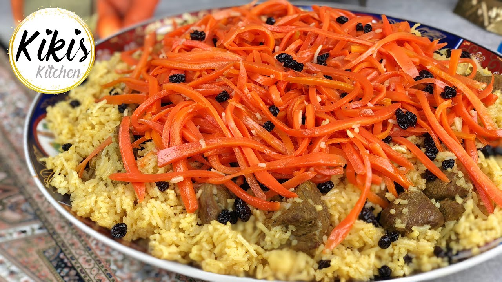

A test paragraph
First put raice in to hot water for about 20 minute, at the other hand make some saucs from onion and tomato...
when the raice got soft mix it with saucs and put it all in a pot. the air must not go outside of the pot. about 20 min. your food is ready!
